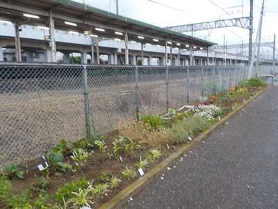
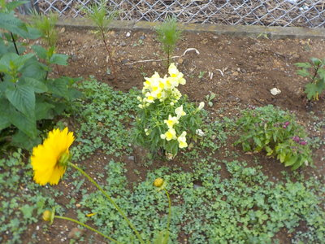
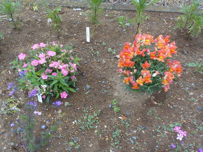

 
活動計画自治会と下野市自然に親しむ会のコラボレーション
今までの経過以降は、水やりと草とりを行って行きます。
６月１３日（土） 午前８時から、植栽 １４日（日） 雨天の場合の予備日
今の状況
５月１７日（日） 午前８時から、植栽 ４月２５日（土） 午前９時から、植栽 ４月４日（土） 午後２時から、土起こしと一部植栽 ３月１４日（土） 午後２時から、土壌調査と、土起こし ３月３日（火） 市役所建設課から許可を得た。
2015年5月29日撮影その他
花壇の変化を見て下さい 区画の状況 そばの成長の記録 紅花の成長の記録